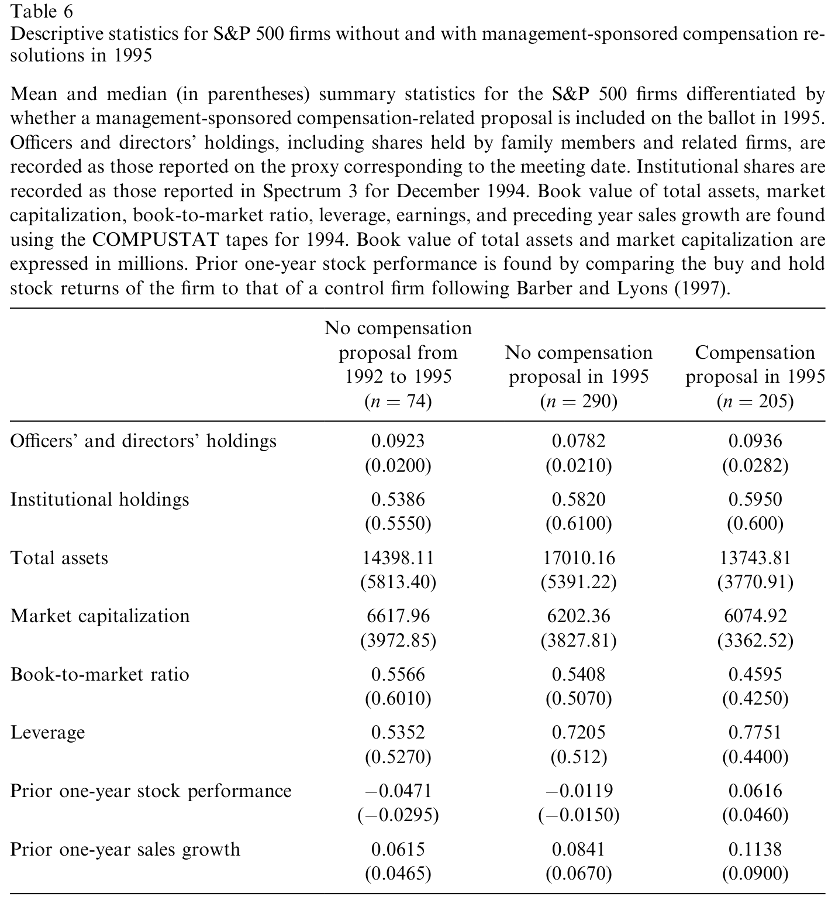
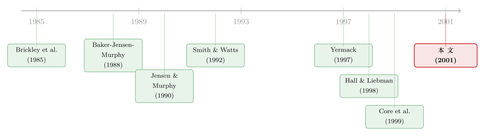

经理人主动给自己「绑上业绩」，股东为什么没有反对？
本文读的是 Morgan & Poulsen (2001, Journal of Financial Economics)：作者翻遍了 1992–1995 年间标普 500 公司的近 2000 份代理材料，找出 958 份「把薪酬和业绩挂钩」的股权激励提案。他们发现，这些计划恰恰出现在最该出现的公司里（投资机会多、代理成本高），市场在宣布时给出正面反应，股东也并非照单全收——稀释越狠的计划，赞成票越少。但作者自己也提醒：这份正面反应里，可能掺着经理「择时」的信号。
1 一只看守鸡舍的狐狸
先讲一个让人有点不舒服的常识。
现代大公司里，所有权和控制权是分开的：股东出钱，经理干活。经理未必时时刻刻替股东着想——这就是公司金融里被讲了半个世纪的 代理问题 (agency problem)。教科书给出的一个「内部解」听上去无懈可击：把经理的薪酬直接和公司的业绩、尤其是股价绑在一起，让他自己变成股东，激励自然就对齐了。
可问题在于：这些「按业绩付薪」(pay-for-performance) 的计划，是谁设计、谁提出的？ 是经理自己。
于是那只看守鸡舍的狐狸就出现了。一份名义上「约束自己」的薪酬方案，完全可能被经理悄悄做成「无论干好干坏都能拿钱」的样子——给的是股票期权，但行权价定得低、稀释放得大、考核标准模糊。早在 Jensen 和 Murphy (1990) 那篇著名的研究里，他们就用 1970 年代的数据算出：股东财富每增加 $1000，CEO 的薪酬平均只多拿 $3.25；在「绝大多数上市公司里，高管薪酬几乎与业绩无关」。（关于代理问题的源头，可参见《现金为什么一定要「还」出去？——四十年后，重读 Jensen 的自由现金流》。）
接着，一个自然的问题是：到了股权激励大爆发的 1990 年代，经理们一窝蜂提出的这些计划，到底是真心想把激励搞对，还是借机给自己加薪？
本文就是冲着这个问题去的。
2 数据：958 份提案，810 张选票
要回答这个问题，作者干了一件很笨但很扎实的事——把代理材料一份份读过去。
他们收集了 1992 至 1995 年间标普 500 公司寄给股东的 1,997 份代理声明 (proxy statements)，从中识别出 958 份由管理层提出的股权激励提案，分布在 810 张不同的代理选票上（一张选票上最多能有八份薪酬提案，不过通常只有一份）。
为什么这些计划都得交股东投票？这里有个制度背景值得一提：根据 1934 年《证券法》第 16 条，内部人在六个月内的「来回交易」利润要被追缴（俗称「短线交易」规则）；而 Rule 16b-3 给了一个豁免口子——只要股东批准了相关的员工持股/期权计划，受益人就能免受这条规则约束。再加上交易所规则和各州公司法的要求，股东投票成了这类计划的「必经关卡」，也正好给研究者留下了一份份可观察的提案与投票记录。（顺带一提，1996 年——也就是本文样本期之后——SEC 取消了这条股东批准的要求，所以这是一段相当干净的「制度窗口」。）
这 958 份提案长什么样？作者按受益人和计划类型做了细致的分类（见原文表 1、表 2）：以受益人计，633 份覆盖高管、208 份覆盖非雇员董事、117 份覆盖普通员工；以类型计，综合计划 (omnibus plan) 最多，达 334 份（占 34.8%），其次是股票期权计划 179 份（18.7%）、非雇员董事计划 190 份（19.8%）、员工持股计划 115 份（12.0%）。
一个容易被忽略的细节：样本里绝大多数提案并不是「全新计划」，而是替换 (278 份)、追加 (140 份) 或修订 (402 份) 既有计划，真正全新的只有 138 份。这意味着——本文测到的财富效应，主要反映的是「续不续、改不改」的增量决策，而非计划的「从无到有」。这个限定后面很关键。
3 识别策略：一半事件研究，一半横截面回归
说清楚方法，才能掂量结论的分量。本文没有什么外生冲击，它的工具箱朴素而经典，分三步走。
第一步，事件研究 (event study)。 围绕提案宣布日（代理材料寄出前后），用 Brown 和 Warner (1985) 的标准方法估计 累计异常收益 (cumulative abnormal returns, CAR)，看市场对计划的即时反应。Brickley (1986) 早就指出，代理材料披露窗口前后的股价反应可以被合理地解读为市场对这些议案的定价，本文沿用了这一传统。
第二步，横截面回归。 把「公司是否提出/续做这类计划」当作被解释变量，用 Logit 回归 (logistic regression) 去看哪些公司特征（投资机会、所有权结构、现金流波动等）和「提案概率」相关。逻辑是：如果计划真是为股东好，它就该集中出现在最能从中获益的公司——也就是代理成本高、未来行动最难界定的高成长公司里。Smith 和 Watts (1992)、Gaver 和 Gaver (1993)、Kole (1997) 早已发现，投资机会越多、成长越快的公司，越倾向于使用带业绩特征的薪酬。
第三步，对投票与稀释做交叉检验。 作者额外收集了每份计划的 稀释 (dilution) 水平，并从一家专业代理投票顾问机构拿到了对各计划的投票建议（保密提供）。稀释被当作「计划质量」的代理变量——稀释越狠，对股东越不利。再把赞成票比例（vote-for percentage）和这些特征对上，看股东到底是「闭眼批准」还是「区别对待」。
必须诚实地说：这套设计是关联性的，不是因果识别。经理对计划的提出时点有完全的自主权——他想什么时候提就什么时候提。所以任何「宣布即上涨」的结论，都躲不开一个替代解释：经理是在自己看好未来时才把计划端出来。这个隐患，作者自己在文章里反复点名，也是全文最关键的一处张力。
4 主要结果：钱用在了刀刃上，但别急着鼓掌
把三步拼起来，故事开始变得有意思。
先看市场反应。 提案宣布时，股东是赚钱的——CAR 显著为正；而且当计划瞄准的是公司的高管、以及当计划是去替换既有计划时，正反应尤其明显。换句话说，市场并不把「给经理发股权」当成坏消息，反而当成好消息。
再看哪些公司在提。 这是全文的骨架结果。如表 7 所示，提出这类计划的，正是那些「最该提」的公司：投资机会丰富、未来管理行动最难事先写进合同的高成长公司，提案概率显著更高；带有更高潜在代理成本的公司也是如此。这与 Smith-Watts 一脉的预测严丝合缝——计划去了它最该去的地方。

Table 7: reports the results of logistic regressions examining the relation
然后是稀释这把双刃剑。 作者报告，全样本的平均稀释为 3.21%（中位数 2.35%），但有 23% 的提案稀释超过了流通股本的 5%。稀释最严重的，恰恰是高管计划——在 623 份有数据的高管提案里，超过 29.4% 的稀释大于 5%；而替换计划更夸张，42.6% 稀释超过 5%（这并不奇怪，因为 235 份替换计划里有 217 份——92%——本就是高管计划）。相比之下，非雇员董事的计划里，稀释超过 5% 的只有 1.6%。要知道，像 TIAA-CREF 这样的机构看门人会明确举红旗：单一计划存续期内稀释超过 15%、或任一年度超过 2%，就要警惕。
最关键的一步在于投票。 如果股东只是橡皮图章，那计划好坏一个样地通过，本文也就没什么可说的了。但数据给出的恰恰相反：赞成票比例与公司的投资机会正相关，与稀释这类负面特征负相关。也就是说，股东确实在读条款、确实在用赞成票的高低给计划「打分」——代理成本高的公司，计划拿到的赞成率最高；而稀释过头的计划，赞成票就掉下来。（散户在代理投票里到底有没有用？这是另一个有意思的题目，可参见《散户其实在「投票」，只是我们一直假设他们不在乎》。）
于是反转出现了——但不是你想的那种反转。
到这里，故事似乎该收束成一个温情的结论：经理把计划放对了地方，股东也没被忽悠，激励对齐成功。可作者偏偏在最后泼了一盆冷水：他们发现，提出计划的公司，无论在提案之前还是之后，业绩都更强。这就麻烦了——宣布日那点正收益，可能根本不是「激励对齐」带来的，而是经理在自己预期股价要涨时，才把这份「绑定未来」的计划端上桌。Yermack (1997) 早就专门研究过：CEO 的股权授予时点，往往卡在公司利好消息前后。换句话说，正的市场反应里，混着一份「信号」——经理在替自己择时。 这一层，让所有从宣布效应推出的福利结论，都得打个折扣。
这才是本文真正诚实、也真正高级的地方：它没有把「市场上涨」简单地翻译成「这是好事」。
5 文献脉络：从「钱给得对不对」到「计划放得对不对」
把本文放回这条研究线里，位置就清楚了。
起点是对「薪酬—业绩敏感度」的发现与失望：Baker、Jensen 和 Murphy (1988) 与 Jensen 和 Murphy (1990) 用 1970 年代数据指出，CEO 薪酬对业绩几乎不敏感（$3.25 per $1000）。
接着，一批早期研究开始问「这些计划到底是不是好事」：Brickley、Bhagat 和 Lease (1985)、Tehranian 和 Waegelein (1985) 考察了 1970–80 年代引入的长期激励计划，结论大体偏正面——但那是一个主要靠敌意收购、代理权争夺等外部机制监督经理的年代。
然后，关于「计划该放在哪种公司」的理论成形：Smith 和 Watts (1992)、Gaver 和 Gaver (1993)、Kole (1997) 把 投资机会集 (investment opportunity set) 与薪酬设计连了起来——成长性越强、行动越难界定的公司，越该用业绩型薪酬。

与此同时，警钟也在敲响：Hall 和 Liebman (1998) 用 1980–1994 的数据证实，股权激励的使用量已大幅上升，「用」与「滥用」的空间一起放大；Core、Holthausen 和 Larcker (1999) 与 Campbell 和 Wasley (1999) 则提供了经理「自肥式」设计计划的证据。
本文 (Morgan & Poulsen, 2001) 正好坐在这个十字路口上：它不再问「薪酬给得对不对」，而是问「在 1990 年代这个股权激励的黄金年代，经理主动提出的计划，到底放对了地方没有、股东买不买账」。它用一个大样本，把「市场反应 + 公司特征 + 稀释 + 投票」四件事拼在一起，给出了一个既不天真、也不愤世嫉俗的答案。
6 评论与延伸（Q&A + 研究方向）
(a) 几个可能的疑问
Q：这不是和 Jensen-Murphy「薪酬对业绩不敏感」矛盾吗？
不矛盾，而是接续。Jensen-Murphy 量的是 1970 年代「已实现」的薪酬—业绩敏感度，结论是太低；本文看的是 1990 年代经理「主动提出」的计划，正是把敏感度提上去的努力。Hall-Liebman (1998) 已证实这种敏感度在两段时期之间大幅上升。本文等于在追问：这股提升潮，到底是真把激励搞对了，还是趁机加薪。
Q：宣布日上涨，到底是「激励对齐」还是「经理择时」？
这正是全文的命门。作者发现提案公司在前后业绩都更强，因此无法排除「经理在看好未来时才提计划」的信号解释（呼应 Yermack 1997）。所以严格说，本文测到的是「提案与正收益相关」，而非「计划因果地创造了价值」。这一点作者非常坦诚。
Q：既然计划「压倒性」通过，投票结果还有信息含量吗？
有，但藏在「赞成率的高低」里，而不是「通过与否」里。计划几乎都过，可赞成票比例随投资机会上升、随稀释下降——这说明股东不是橡皮图章，而是在用票数给计划「连续打分」。
Q：为什么偏偏是替换计划 (replacement) 稀释最狠？
因为替换计划里 92%（217/235）本就是高管计划，而高管计划天然稀释更大（>5% 稀释的占 29.4%）。计划通常有十年期限，到期或额度用尽时就要替换，这时往往一次性补足大量份额，稀释自然更高。
Q：用「提出 vs 未提出」做 Logit，会不会有选择偏误？
会，但方向对作者有利。许多「未提出」的公司其实早已在内部安排了业绩型薪酬，这会让提出组与未提出组的差异被低估——也就是说，这种重叠是在和作者「作对」，真能跑出显著差异，反而更可信。
Q：1993 年生效的 162(m) 税改会不会污染样本？
有可能。162(m) 要求支付给前五名高管、超过
$100万的薪酬必须与业绩挂钩并经股东批准才可抵税，这本身就会推高样本期内的业绩型提案数量。本文跨越 1992–1995，正好骑在这条政策线两侧，分离「税收驱动」与「治理驱动」的提案是个值得单独处理的问题。
(b) 几个可能的研究问题与提案
1. 外资持有人对股权激励投票的态度
【经济故事】外资机构（尤其是来自治理文化迥异国家的）对稀释、对内部人集中投票权的容忍度，可能与本土机构系统性不同。如果外资更在意稀释，那么外资持股高的公司，高稀释计划应当拿到更低的赞成率。 【可行性】中。需要 13F/各国持仓数据匹配代理投票记录（如今有 ISS Voting Analytics）。识别上可借助指数纳入等准外生的外资持股变动。doable，但匹配成本不低。
2. 股权激励稀释如何被债权人定价
【经济故事】股权激励放大了经理的「风险偏好」与稀释，这对股东是激励、对债权人却可能是风险转移 (risk shifting)。高稀释、高 delta 的薪酬计划，是否对应更宽的公司债利差？ 【可行性】中高。代理材料里的计划特征 + TRACE 公司债成交 + 计划宣布日的债券价格反应，是一个干净的事件研究框架。是我个人最想做的方向之一。
3. 用 Say-on-Pay 强制投票重估「投票的信息含量」
【经济故事】本文的投票还是「批准型」投票，通过率极高。Dodd-Frank (2010) 引入的强制性 say-on-pay 把投票变成了更纯粹的「意见表达」，正好可以当作准自然实验，检验股东对稀释/业绩的敏感度是否被本文低估。 【可行性】高。投票数据公开、时间断点清晰，标准的 前后/断点设计即可。
4. 经理择时假说的直接检验
【经济故事】本文留下的最大悬念是「正反应里有多少是信号」。可以把计划提出日与盈余预测修正、期权授予日、内部人交易窗口对齐，直接量化「择时」成分有多大。 【可行性】中。需要 IBES 预测修正 + 期权授予明细 + 内部人交易 (Form 4) 的精细对齐，工作量不小但路径清晰。
7 我的判断
本文的贡献，不在某个惊艳的系数，而在用一个诚实的大样本，给一个容易被情绪化讨论的问题（「经理是不是在自肥」）画出了一幅有层次的图景：计划确实流向了最该用它的公司，股东确实在用赞成率惩罚稀释，但宣布日的正收益里掺着择时信号，不能简单当成「价值创造」的证据。它把「狐狸看守鸡舍」的直觉，拆成了「狐狸把锁装对了地方 + 母鸡们也会看锁好不好 + 但狐狸挑了个好天气来装锁」三层。
对识别的担忧也很清楚：全文没有外生变异。提案时点由经理自选，投票顾问的建议本身可能内生于计划质量，而「提出 vs 未提出」的对照组里混着已有隐性激励的公司。本文的结论因此更像是「精心刻画的相关事实」，而非干净的因果。作者对此毫不回避，这反而是它经得起读的原因。
后续我最想看到的，是有人拿一个真正外生的冲击——税法断点、强制 say-on-pay、或指数纳入带来的外资持股变动——把「计划→业绩」「稀释→债权人」这两条因果链坐实。把这篇 2001 年的「事实地图」，升级成一张「因果地图」。
参考文献
Baker, G., Jensen, M., Murphy, K. (1988). Compensation and incentives: practice vs. theory. Journal of Finance 43, 593–616.
Brickley, J., Bhagat, S., Lease, R. (1985). The impact of long-range managerial compensation plans on shareholder wealth. Journal of Accounting and Economics 7, 115–129.
Brickley, J. (1986). Interpreting common stock returns around proxy statement disclosures and annual shareholder meetings. Journal of Financial and Quantitative Analysis 21, 343–349.
Brown, S., Warner, J. (1985). Using daily stock returns in the case of event studies. Journal of Financial Economics 14, 3–31.
Campbell, C., Wasley, C. (1999). Stock-based incentive contracts and managerial performance: the case of Ralston Purina Company. Journal of Financial Economics 51, 195–217.
Core, J., Holthausen, R., Larcker, D. (1999). Corporate governance, chief executive officer compensation, and firm performance. Journal of Financial Economics 51, 371–406.
Gaver, J., Gaver, K. (1993). Additional evidence on the association between the investment opportunity set and corporate financing, dividend and compensation policies. Journal of Accounting and Economics 16, 125–160.
Hall, B., Liebman, J. (1998). Are CEOs really paid like bureaucrats? Quarterly Journal of Economics 113, 653–691.
Jensen, M., Murphy, K. (1990). Performance pay and top-management incentives. Journal of Political Economy 98, 225–284.
Kole, S. (1997). The complexity of compensation contracts. Journal of Financial Economics 43, 79–104.
Morgan, A., Poulsen, A. (2001). Linking pay to performance—compensation proposals in the S&P 500. Journal of Financial Economics 62(3), 489–523.
Smith, C., Watts, R. (1992). The investment opportunity set and corporate financing, dividend and compensation policies. Journal of Financial Economics 32, 263–292.
Tehranian, H., Waegelein, J. (1985). Market reaction to short-term executive compensation plan adoption. Journal of Accounting and Economics 7, 131–144.
Yermack, D. (1997). Good timing: CEO stock option awards and company news announcements. Journal of Finance 52, 449–476.